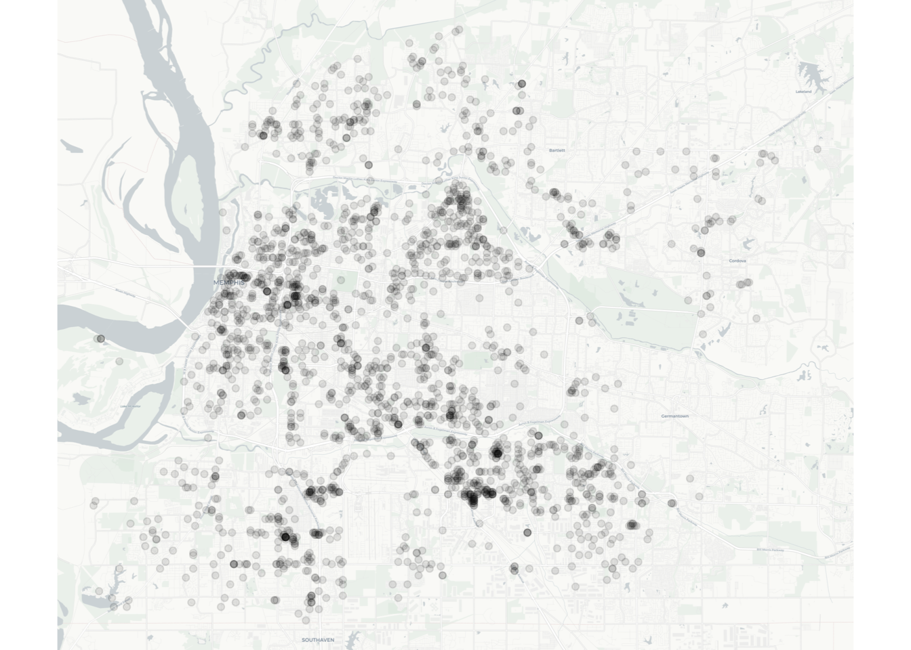
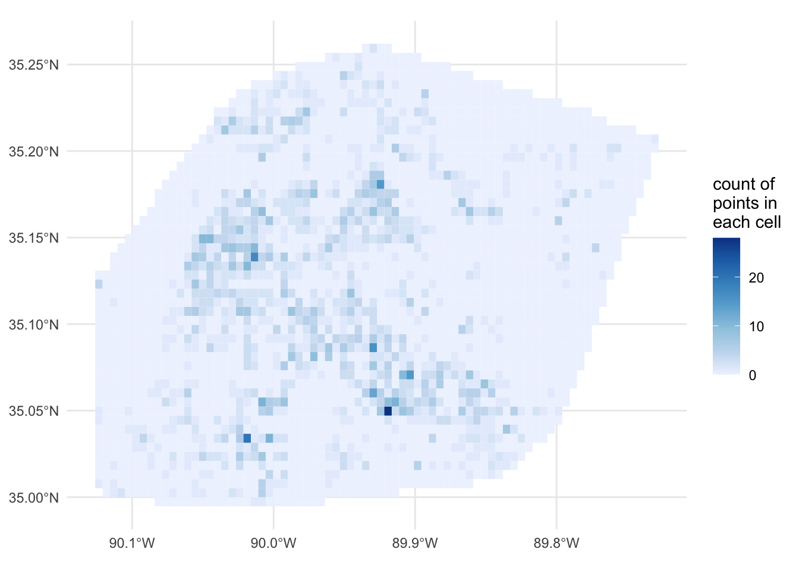
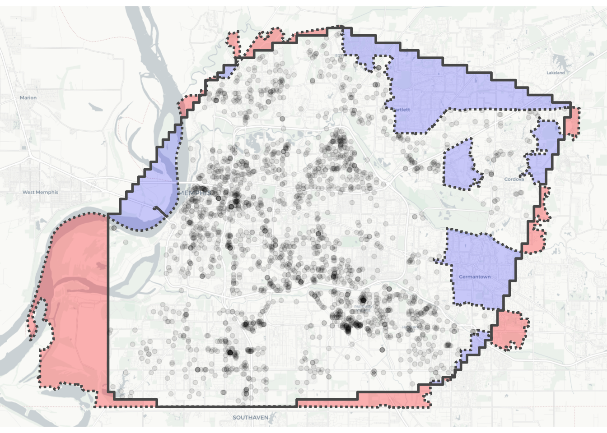
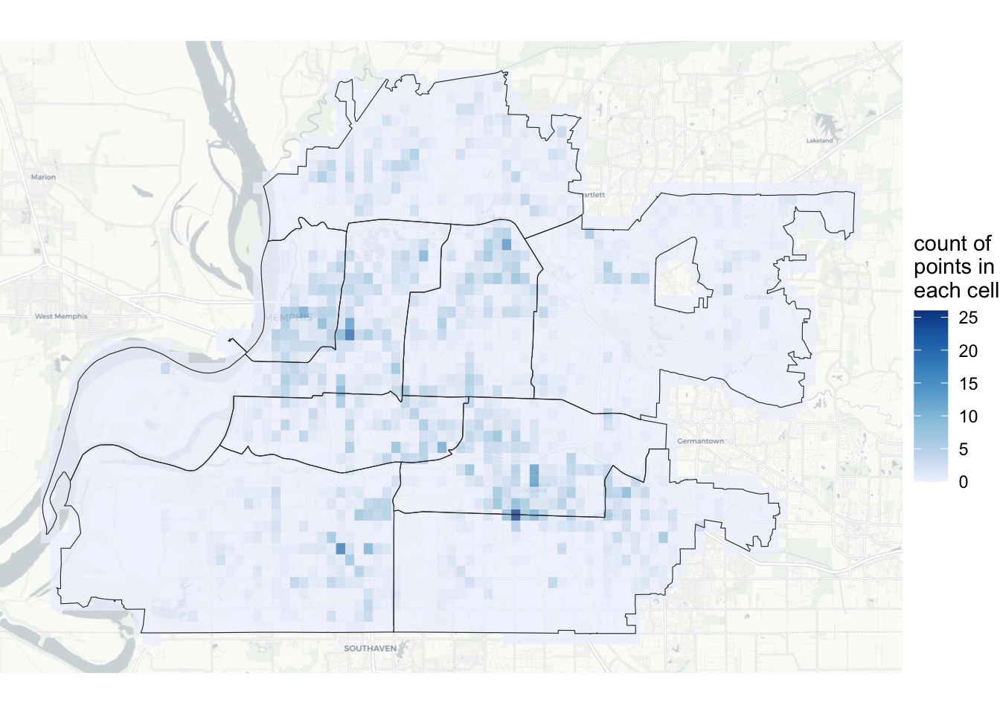
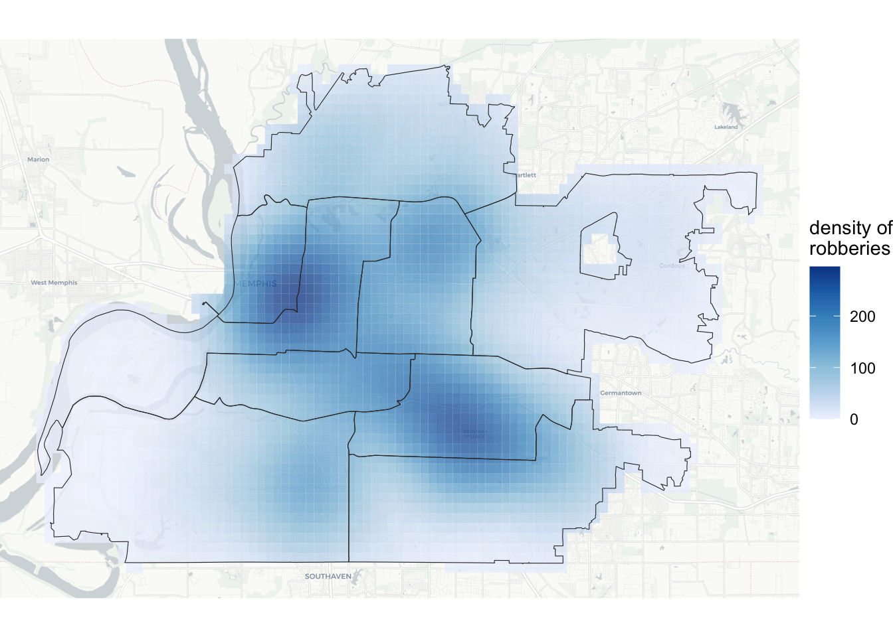
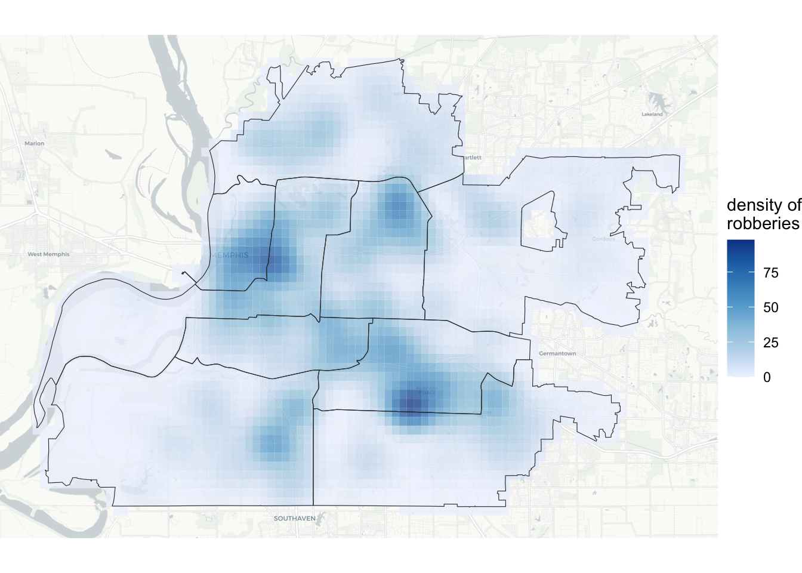
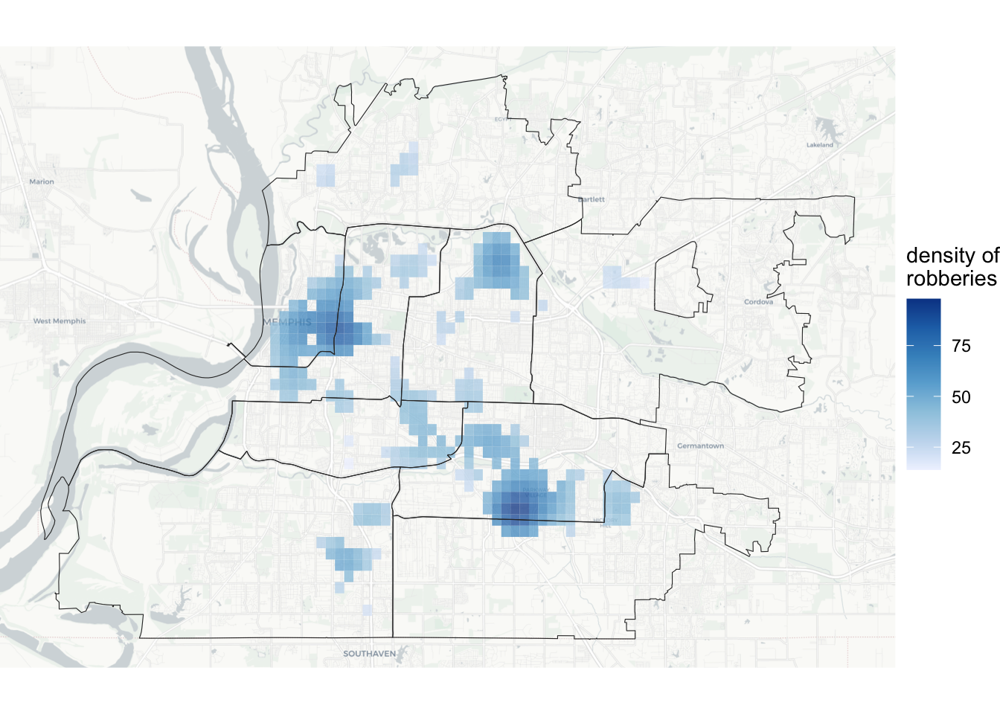
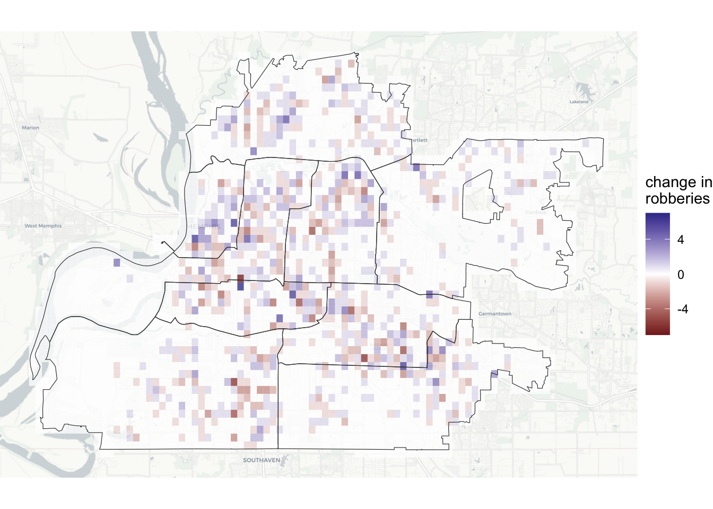
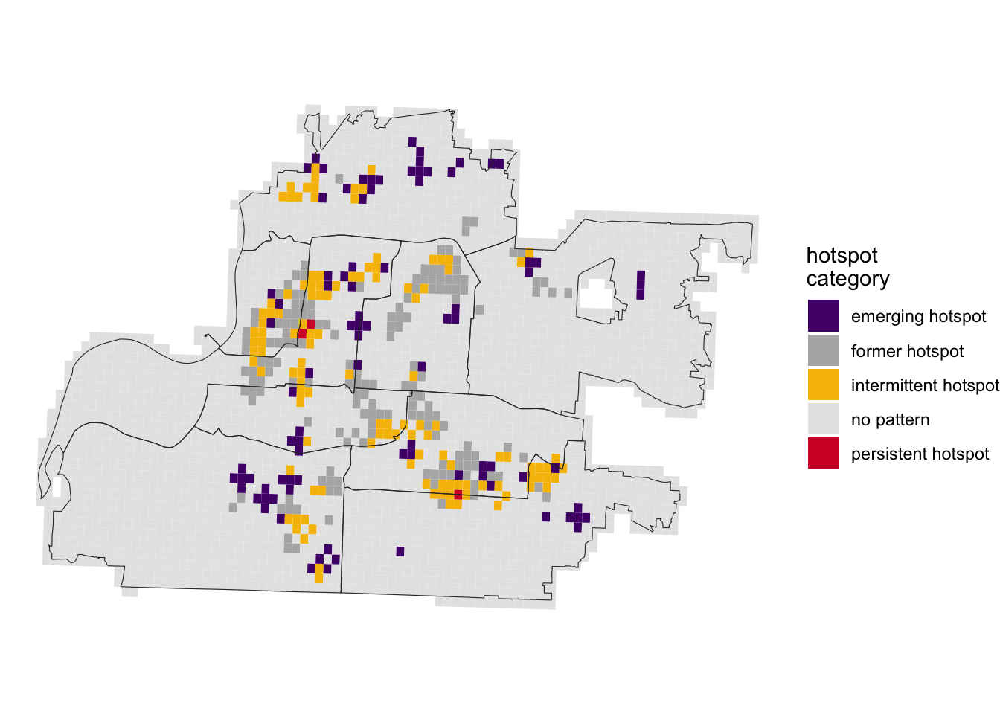

| uid | offense_type | date | geometry |
|---|---|---|---|
| 15213800 | personal robbery | 2019-01-01 01:30:00 | <SF POINT> |
| 15214030 | personal robbery | 2019-01-01 20:00:00 | <SF POINT> |
| 15214042 | personal robbery | 2019-01-01 21:58:00 | <SF POINT> |
| 15214050 | personal robbery | 2019-01-01 22:30:00 | <SF POINT> |
| 15214118 | personal robbery | 2019-01-02 09:38:00 | <SF POINT> |
| 15214242 | personal robbery | 2019-01-02 18:50:00 | <SF POINT> |
Introducing sfhotspot, a package for identifying hotspots
This post introduces sfhotspot, a package for hotspot analysis. More detail is available on the sfhotspot package website.
The sfhotspot package aims to make hotspot analysis in R as easy as possible. Several other packages (e.g. SpatialKDE) offer similar functionality, but require users to manually specify parameters such as bandwidth. This can be a barrier to new users, so sfhotspot attempts to provide reasonable default values wherever possible, while allowing users to progressively take more control as they wish.
To illustrate how to use the package, let’s load it along with other packages we need.
# ggspatial for base maps
library(ggspatial)
# for analysing hotspots
library(sfhotspot)
# ggplot2 for making maps
library(ggplot2) We will use the memphis_robberies and memphis_precincts datasets that are built into the package.
| precinct | geometry |
|---|---|
| Airways | <SF POLYGON> |
| Appling Farms | <SF POLYGON> |
| Austin Peay | <SF POLYGON> |
| Crump | <SF POLYGON> |
| Mt. Moriah | <SF POLYGON> |
| North Main | <SF POLYGON> |
As the package name suggests, all the functions in sfhotspot work with simple features (SF) objects produced by the sf package. In this case all the datasets are already SF objects, but if the data was in another format (e.g. loaded from a CSV file) it could be converted using the st_as_sf() function from the sf package. The co-ordinates in these datasets are longitudes and latitudes, specified in decimal degrees.
To understand this data, we can plot it on a map, including a base map using theannotation_map_tile() function from the ggspatial package:
ggplot() +
annotation_map_tile(type = "cartolight", zoomin = 1, progress = "none") +
geom_sf(data = memphis_robberies, alpha = 0.1) +
theme_void()
One major problem with this map is that many of the points overlap. This can be dealt with to a limited extent by making the points semi-transparent, but it’s still very hard to see where the highest concentrations of points are. sfhotspot provides several functions to deal with that problem.
hotspot_count(): Counting points
The most-basic way to understand where robberies in Memphis are most concentrated is to place a grid of equally-sized cells over the city and then count the number of robberies occurring in each cell. We can do this using the hotspot_count() function, then we can plot the result with the built-in autoplot() function.
robbery_count <- hotspot_count(memphis_robberies)
autoplot(robbery_count) Cell size set to 0.00524 degrees automatically
If hotspot_count() is used without specifying any optional arguments, the function will create a grid that has 50 cells on the shorter side and the resulting cell size will be highlighted in a message. In this case, since the data is specified in decimal degrees, the same unit it used for the cell size. The message reporting the cell size can be suppressed with the quiet = TRUE argument. Users can manually specify the cell size with the cell_size argument.
By default, the grid returned by hotspot_count() will be based on the convex hull of the points in the data.

The count layer being based on the convex hull of the data (shown as a solid line in the map above) could be misleading, for two reasons.
- Some areas that are inside the city boundary (the dotted line in the map above) aren’t included in the count layer because no crimes occurred there and they are outside the convex hull. These areas are shown in red on the map above. On the count map above it looks like we don’t know how many robberies occurred in these areas even though we actually know that no robberies occurred there.
- Some areas that are outside the city boundary are nevertheless wrongly included in the count layer because of how the convex hull is constructed, despite being outside the city boundary. These areas are shown in blue on the map above. On the count layer these areas will wrongly appear as if they have few robberies even though we don’t actually know how many robberies occurred there1.
To solve this problem, we can use the hotspot_grid() function to specify the grid manually, based on an SF object showing the area for which we have point data. In this case, we can use the built-in dataset of Memphis police precinct boundaries.
At the same time, let’s take a little more control of the plot appearance by using the autolayer() function instead of autoplot() and specifying the rest of the plot manually. This gives us the flexibility to (for example) add a base map, add precinct boundaries, and remove unnecessary elements from the map.
memphis_grid <- hotspot_grid(memphis_precincts, quiet = TRUE)
robbery_count_grid <- hotspot_count(memphis_robberies, grid = memphis_grid)
ggplot() +
annotation_map_tile(type = "cartolight", zoomin = 1, progress = "none") +
autolayer(robbery_count_grid, alpha = 0.75) +
geom_sf(data = memphis_precincts, colour = "grey20", fill = NA) +
scale_fill_distiller(direction = 1) +
labs(fill = "count of\npoints in\neach cell") +
theme_void()
Note
You can find out more about this function in the hotspot_count() documentation.
hotspot_kde(): Estimating point density
It can be hard to see patterns in a grid of counts. One alternative is to use two-dimensional kernel-density estimation (KDE). This can be done using the hotspot_kde() function:
robbery_kde <- hotspot_kde(memphis_robberies, grid = memphis_grid)
ggplot() +
annotation_map_tile(type = "cartolight", zoomin = 1, progress = "none") +
autolayer(robbery_kde, alpha = 0.75) +
geom_sf(data = memphis_precincts, colour = "grey20", fill = NA) +
scale_fill_distiller(direction = 1) +
labs(fill = "density of
robberies") +
theme_void() Data transformed to "WGS 84 / UTM zone 16N" co-ordinate system.
ℹ CRS code: "EPSG:32616".
ℹ Unit of measurement: metre.
Bandwidth set automatically based on rule of thumb.
ℹ Bandwidth = 5,588 metres.
You might notice the message that starts Data transformed to "WGS 84 / UTM zone 16N" co-ordinate system. Estimating kernel density for latitude/longitude data specified in decimal degrees is unwieldy, so when provided with latitude/longitude data hotspot_kde() automatically transforms the data to use a co-ordinate reference system that specifies locations in metres instead. The data are then silently transformed back later on, so that the result produced by hotspot_kde() uses the same co-ordinate system as the input data.
There are some benefits to transforming the data from lat/lon co-ordinates before passing it to hotspot_kde(). This is especially true if you want to specify settings like cell size manually, since it is easier to (for example) think about a cell size of 250 metres than one of 0.00524 decimal degrees. You can transform lat/lon co-ordinates to any other co-ordinate reference system using the st_transform() function from the sf package, but sfhotspot also provides the function st_transform_auto() to automatically transform lat/lon data to a suitable metre-based co-ordinate system.
Let’s transform all the datasets to a metre-based co-ordinate system and then use those versions of the data for the rest of this tutorial.
memphis_robberies_utm <- st_transform_auto(memphis_robberies)
memphis_precincts_utm <- st_transform_auto(memphis_precincts, quiet = TRUE)
memphis_grid_utm <- st_transform_auto(memphis_grid, quiet = TRUE)Data transformed to "WGS 84 / UTM zone 16N" co-ordinate system.
ℹ CRS code: "EPSG:32616".
ℹ Unit of measurement: metre.The KDE map above makes it easier to see which parts of the city robberies are concentrated in. However, it would be useful to be able to see more detail of where robbery is most concentrated. The level of detail contained in a KDE map is controlled by a parameter called bandwidth. By default, hotspot_kde() chooses the appropriate bandwidth automatically using the bandwidth.nrd() function from the MASS package. However, for crime maps it is usually better to select a smaller bandwidth than the default. We can do this by adjusting the automatically chosen bandwidth using the bandwidth_adjust argument to hotspot_kde(). For example, we can set the bandwidth to be 40% of the automatically chosen value:
robbery_kde_bw <- hotspot_kde(
memphis_robberies_utm,
grid = memphis_grid_utm,
bandwidth_adjust = 0.4
)
ggplot() +
annotation_map_tile(type = "cartolight", zoomin = 1, progress = "none") +
autolayer(robbery_kde_bw, alpha = 0.75) +
geom_sf(data = memphis_precincts_utm, colour = "grey20", fill = NA) +
scale_fill_distiller(direction = 1) +
labs(fill = "density of
robberies") +
theme_void() Bandwidth set automatically based on rule of thumb.
ℹ Adjusted bandwidth = 2,235 metres (0.4 * 5,588 metres).
Note
You can find out more about creating KDE maps in the hotspot_kde() documentation or in Chapter 6 of the online textbook Learn Crime Mapping with R.
hotspot_gistar(): Finding hotspots
The KDE map above shows us the density of robberies, but we would expect there to be some variation in the distribution of crime just by chance. This is important because if we wanted to use this map to work out where police should focus patrols or where the city should improve street lighting, we wouldn’t want money wasted responding to random variation.
We can deal with this problem by calculating a Getis–Ord Gi* (pronounced ‘G-I-star’) statistic for each cell in the grid. We can use this to identify which cells in the grid have more crimes in them than we would expect by chance. We can then filter the resulting dataset using the filter() function from the dplyr package to keep only those cells with (a) a positive value in the gistar column and (b) a value in the pvalue column of less than 0.05. At the same time, we’ll take full control of how the result is added to the map by using geom_sf() instead of autolayer().
robbery_gistar <- hotspot_gistar(
memphis_robberies_utm,
grid = memphis_grid_utm,
bandwidth_adjust = 0.4
) |>
dplyr::filter(gistar > 0, pvalue < 0.05)
ggplot() +
annotation_map_tile(type = "cartolight", zoomin = 1, progress = "none") +
geom_sf(aes(fill = kde), data = robbery_gistar, alpha = 0.75, colour = NA) +
geom_sf(data = memphis_precincts_utm, colour = "grey20", fill = NA) +
scale_fill_distiller(direction = 1) +
labs(fill = "density of
robberies") +
theme_void() Bandwidth set automatically based on rule of thumb.
ℹ Adjusted bandwidth = 2,235 metres (0.4 * 5,588 metres).
This map shows us which cells in the grid have more robberies than we would expect by chance. This might be the basis of police hotspot patrols or problem-solving efforts, which it is important to focus where they are most needed to maximise the benefit while minimising the costs and any harms those programmes might cause.
Note
You can find out more about creating hotspot maps in the hotspot_gistar() documentation or in Chapter 11 of the online textbook Learn Crime Mapping with R.
hotspot_change(): identifying change over time
Once programmes have been put in place to try to reduce robbery, we might want to see how the frequency of robbery has changed in different places. We can do that with the hotspot_change() function, which counts how many points there were in each grid cell in two periods. The memphis_robberies_utm object contains data on robberies from 1 January to 31 December 2019. If we imagine that the change we are interested in happened on 1 July that year, we can count how many robberies occurred before and after that date.
robbery_change <- hotspot_change(memphis_robberies_utm, grid = memphis_grid_utm)
ggplot() +
annotation_map_tile(type = "cartolight", zoomin = 1, progress = "none") +
geom_sf(aes(fill = change), data = robbery_change, alpha = 0.75, colour = NA) +
geom_sf(data = memphis_precincts_utm, colour = "grey20", fill = NA) +
scale_fill_gradient2() +
labs(fill = "change in
robberies") +
theme_void() Boundary point set as 09:30 hours on 02 July 2019 automatically
Note
You can find out more about mapping change over time in the hotspot_change() documentation.
hotspot_classify(): categorise hotspots
The interaction of concentrations of events in space and time can create complex patterns. One way to understand variation over space and time is to categorise locations based on whether they have more crimes than would be expected by chance across multiple time periods. hotspot_classify() categorises grid cells into persistent hotspots, emerging hotspots, former hotspots, intermittent hotspots and other locations. Visualising the results produced by hotspot_classify() needs more lines of code, so let’s fall back on autoplot() to get an idea of what the hotspot classification looks like.
robbery_classify <- hotspot_classify(
memphis_robberies_utm,
grid = memphis_grid_utm
)
autoplot(robbery_classify) +
geom_sf(data = memphis_precincts_utm, colour = "grey20", fill = NA) +
theme_void() `period` set to 28 days automatically.
Date range data is not a multiple of chosen period.
ℹ Final period contains 0.6 days.
ℹ Set `collapse = TRUE` to collapse that period into penultimate period.
Cell size set to 500 metres automatically
Note
There are many ways to control the categorisation of hotspots – see the online documentation for hotspot_classify() for more details.
Common arguments
Functions in the sfhotspot package support a series of common arguments that you can use to control how they work:
cell_sizecontrols the size of each cell in the grid. This argument takes a single number, which is treated as being in the same units as the unit used in the co-ordinate reference system of the data (e.g. metres or decimal degrees).grid_typecontrols whether the grid uses square cells (the default) or hexagonal cells.quiet(defaultFALSE) controls whether or not the messages that the function would normally produce to help avoid common mistakes are produced or not.quiet = FALSEis most useful in development, before usingquiet = TRUEin production.
Find out more
This post introduces the basic options that are available in the sfhotspot package. You can find out more on the package website. If you find any issues with the package or have any questions, please open an issue on GitHub.
To find out more about spatial analysis of crime in R, look at the free online textbook Learn Crime Mapping with R.
Footnotes
If basing the count layer on the convex hull of the data can be misleading, why is that the default behaviour for functions in this package? Simply because if a function has only been provided with a point dataset, it has no other option but to base the output on the area covered by that dataset.↩︎